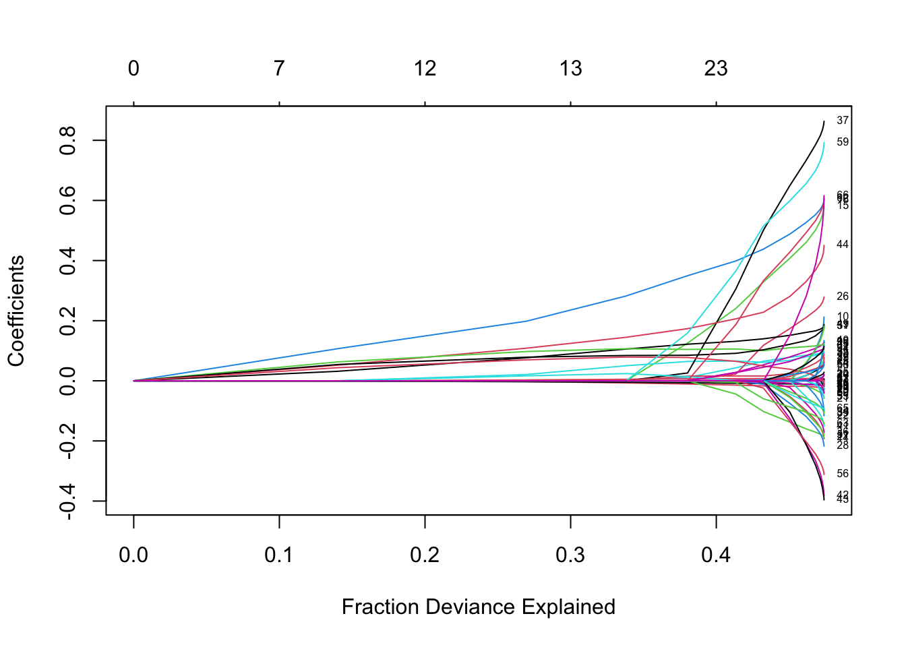

Lasso Regression Example using glmnet package in R
More details please refer to the link below: (https://web.stanford.edu/~hastie/glmnet/glmnet_alpha.html#lin)
This post shows how to use glmnet package to fit lasso regression and how to visualize the output. The description of data is shown in here.
Visualize the coefficients
Label the path
The summary table below shows from left to right the number of nonzero coefficients (DF), the percent (of null) deviance explained (%dev) and the value of \lambda (Lambda).
We can get the actual coefficients at a specific \lambda whin the range of sequence:
coeffs <- coef(fit, s = 0.1)
coeffs.dt <- data.frame(name = coeffs@Dimnames[[1]][coeffs@i + 1], coefficient = coeffs@x)
# reorder the variables in term of coefficients
coeffs.dt[order(coeffs.dt$coefficient, decreasing = T),] name coefficient
1 (Intercept) 3.010501e+00
7 hfa 4.634502e-01
12 aro 2.139111e-01
9 inc 1.298769e-01
6 convul 9.284738e-02
16 whz 9.018865e-02
14 afe 8.749033e-02
10 lcw 7.538421e-02
15 absu 5.758727e-02
13 qcr 2.952464e-02
11 str 2.298848e-02
3 temp 9.842032e-03
5 rr 7.309241e-03
8 hfe 4.870858e-03
2 wght -3.138053e-05
4 age -8.724823e-03Also, it can allow people to make predictions at specific \lambda with new input data:
nx = matrix(rnorm(nrow(dt$X)*ncol(dt$X)), nrow = nrow(dt$X), ncol = ncol(dt$X))
pred <- predict(fit, newx = nx, s = c(0.1, 0.05))
head(pred, 20) s1 s2
[1,] 3.097967 1.1490660
[2,] 3.121528 1.8672064
[3,] 3.481338 2.0824025
[4,] 3.513677 1.9860360
[5,] 3.214442 1.7452629
[6,] 2.490538 0.6267712
[7,] 2.469592 0.9068895
[8,] 2.720040 1.2436652
[9,] 3.849610 1.9736908
[10,] 3.033293 1.1007648
[11,] 2.842930 1.0094204
[12,] 3.027152 1.5992459
[13,] 3.094639 0.7926862
[14,] 2.082463 -1.1104287
[15,] 3.612934 1.1337165
[16,] 3.122380 1.8367326
[17,] 2.133454 1.5344259
[18,] 3.207939 0.4061563
[19,] 3.138387 1.1810681
[20,] 2.241477 -0.6124045cv.glmnet is the function to do cross-validation here.
Plotting the object gives the selected \lambda and corresponding Mean-Square Error.

We can view the selected \lambda’s and the corresponding coefficients, For example,
lambda.min returns the value of \lambda that gives minimum mean cross-validated error. The other \lambda saved is lambda.lse, which gives the most regularized model such that error is within one standard error of the minimum. To use that, we only need to replace lambda.min with lambda.lse above.
# create a function to transform coefficient of glmnet and cvglmnet to data.frame
coeff2dt <- function(fitobject, s) {
coeffs <- coef(fitobject, s)
coeffs.dt <- data.frame(name = coeffs@Dimnames[[1]][coeffs@i + 1], coefficient = coeffs@x)
# reorder the variables in term of coefficients
return(coeffs.dt[order(coeffs.dt$coefficient, decreasing = T),])
}
coeff2dt(fitobject = cv.fit, s = "lambda.min") %>% head(20) name coefficient
19 str 0.624028697
30 whz 0.552566043
10 hfa 0.520301406
9 convul 0.367161468
24 aro 0.305231265
32 puskin 0.246791663
12 fde 0.204677903
26 afe 0.162886449
16 inc 0.142234777
34 oab 0.132001767
1 (Intercept) 0.126502256
11 hfe 0.109667313
4 temp 0.084079719
18 lcw 0.075124732
31 smi2 0.051082663
25 qcr 0.048926715
17 sr1 0.019747399
28 crs 0.014597356
20 gru 0.008735240
7 rr 0.007203584coeffs.table <- coeff2dt(fitobject = cv.fit, s = "lambda.min")
ggplot(data = coeffs.table) +
geom_col(aes(x = name, y = coefficient, fill = {coefficient > 0})) +
xlab(label = "") +
ggtitle(expression(paste("Lasso Coefficients with ", lambda, " = 0.0275"))) +
theme(axis.text.x = element_text(angle = 45, hjust = 1),
legend.position = "none") 
Elastic net
As an example, we can set \alpha=0.2
fit2 <- glmnet(X, y, alpha = 0.2, weights = c(rep(1, 716), rep(2, 100)), nlambda = 20)
print(fit2, digits = 3)
Call: glmnet(x = X, y = y, weights = c(rep(1, 716), rep(2, 100)), alpha = 0.2, nlambda = 20)
Df %Dev Lambda
1 0 0.00 3.2500
2 7 14.02 2.0000
3 12 26.98 1.2300
4 13 33.81 0.7590
5 18 38.03 0.4670
6 23 41.35 0.2880
7 29 43.24 0.1770
8 39 45.05 0.1090
9 47 46.17 0.0672
10 52 46.82 0.0414
11 57 47.15 0.0255
12 58 47.29 0.0157
13 60 47.35 0.0097
14 60 47.38 0.0060
15 64 47.39 0.0037
16 65 47.39 0.0023
17 66 47.40 0.0014
18 66 47.40 0.0009
19 66 47.40 0.0005According to the default internal settings, the computations stop if either the fractional change in deviance down the path is less than 10^{-5} or the fraction of explained deviance reaches 0.999.
